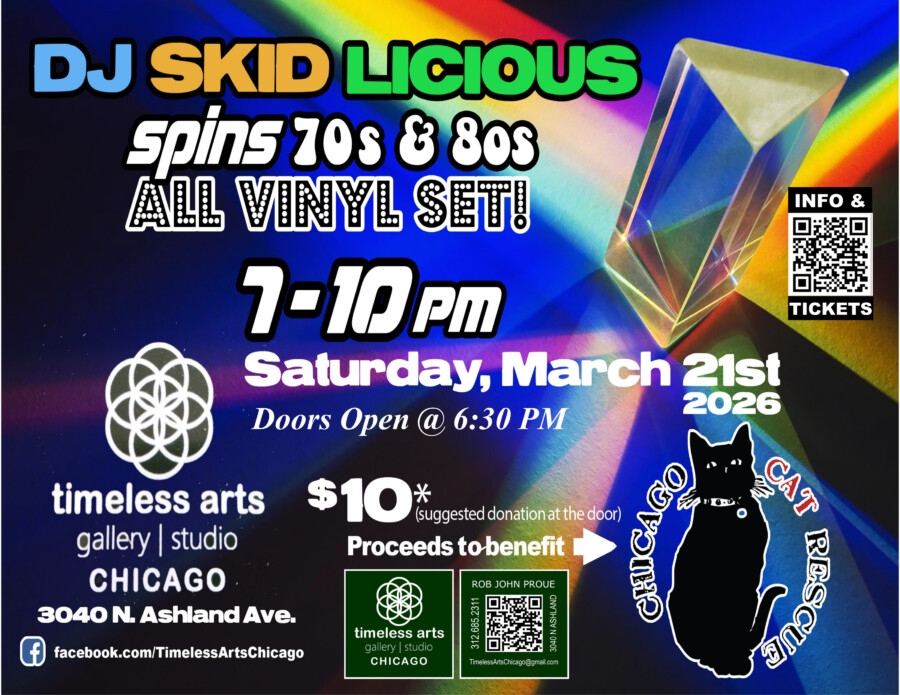

DJ SKID LICIOUS
Head to Timeless Arts Gallery & Studio on Saturday, March 21st for DJ SKID LICIOUS, spinning all Vinyl 70’s & 80’s Punk, New Wave & Post Punk classics to benefit The Chicago Cat Rescue.
SKID, front man for David Bowie Tribute Band, Super Creeps, can also be found spinning monthly at the Lizard Lounge on 1st Sundays, and Phyllis’ Musical Inn, 2nd Tuesdays.
But….. Saturday, March 21st, Skid’s breaking out more 70’s & 80’s Punk & New Wave Vinyl in an effort to raise $$$ for CCR, The Chicago Cat Rescue, (Chicagocatrescue.org), which endlessly and tirelessly places lost, abandoned and neglected cats in loving foster and forever homes on a VOLUNTEER basis.
Timeless Arts is donating 20% of sales during this event directly to CCR, so please stop out Saturday, March 21st for some vintage tunes, food, drink, paying it forward, and some mighty fine art & jewelry, AND……since this is CHICAGO, you’re ALL welcome to BYOB.
Who: DJ SKID LICIOUS
What: Spinning 70’s & 80’s Vinyl for Chicago Cat Rescue
Where: Timeless Arts Gallery & Studio, 3040 N. Ashland, CHICAGO
Why: Saturday Night Fun with a Charity twist!